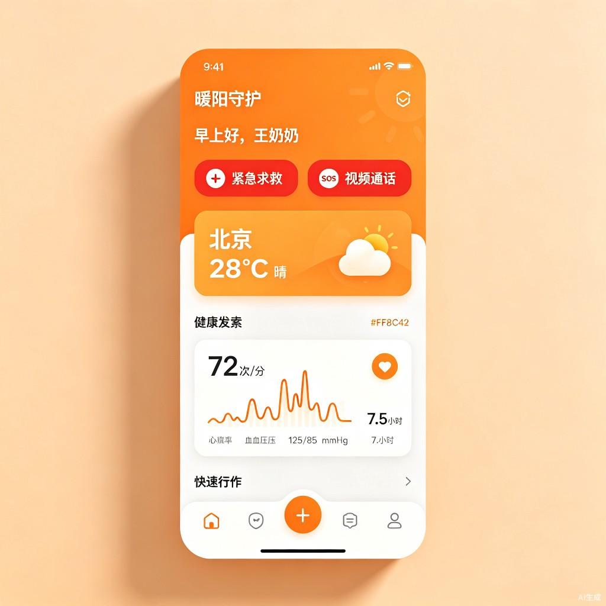
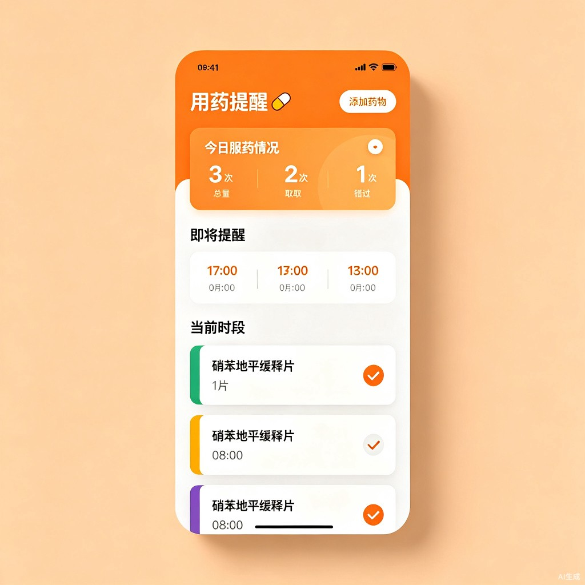
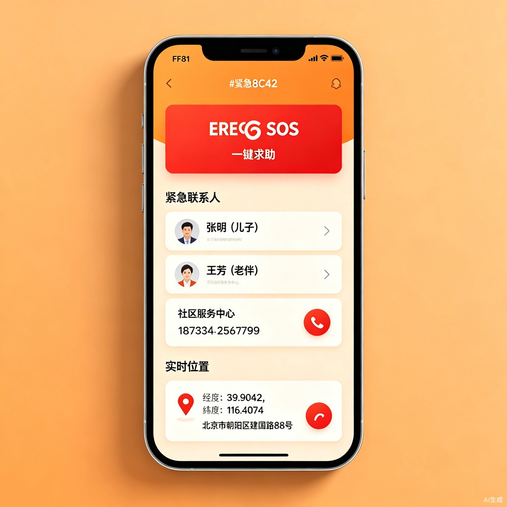
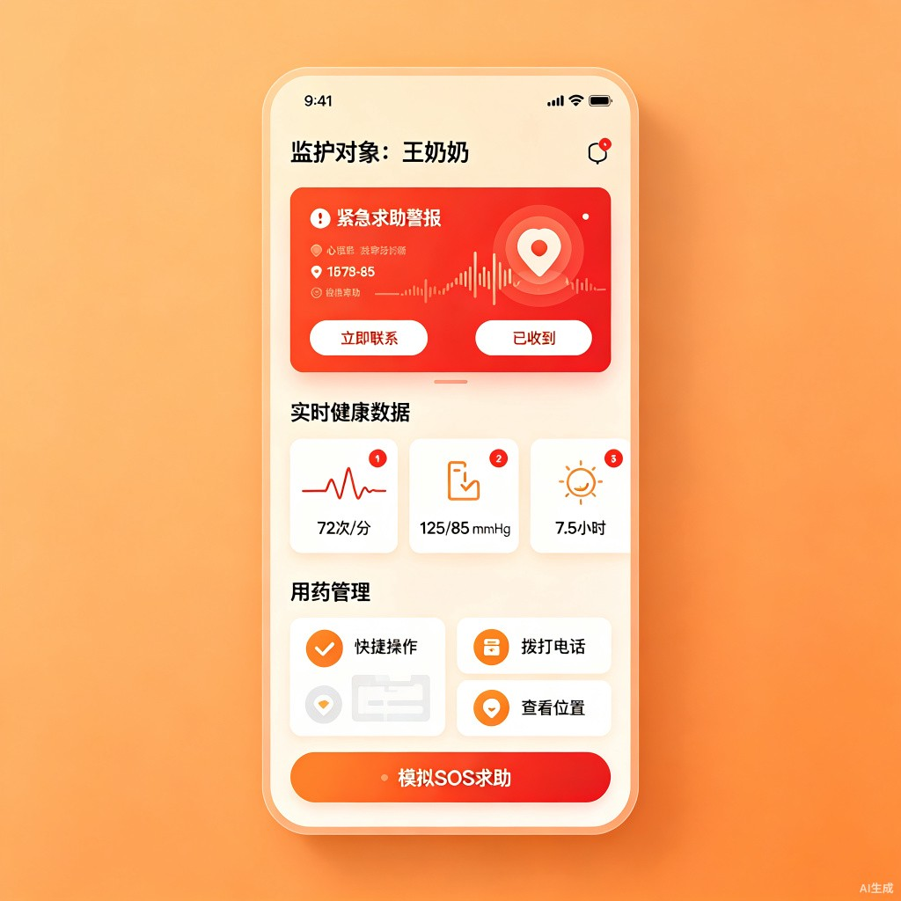

社会服务
社会公益
【社会服务赛道】暖阳守护
一款专为老年人设计的关爱守护微信小程序
0
先和大家打个招呼吧
大家好！
我是一名关注养老科技的产品爱好者。平时在工作中接触过不少老年人群体，也亲眼看到过身边的长辈因为忘记吃药、突发不适时无人知晓而陷入危险。我一直想用技术做点什么，但苦于没有全职开发团队，很多想法只能停留在脑子里——直到遇到了 TRAE。
我和 TRAE 配合的真实感受
- 把想法"说"给它听：我没有什么技术背景，但我很清楚用户需要什么。我跟 TRAE 说："我想做一个给老人用的小程序，字号要大、按钮要大、能一键求救、能提醒吃药、能让子女远程看到爸妈的状态。" 它没有让我去学编程，而是直接开始帮我搭。
- "原来这么简单"的时刻：最让我惊讶的是用药管理模块。我描述了"老人需要添加药物、选时间、记录是否吃了"这个流程，TRAE 几分钟就生成了完整的页面代码，包括添加药物的弹窗、时间选择器、服药状态追踪——这些功能如果让我自己写，可能一个月都搞不定。
- 它帮我跨过的坎：跨平台编译是我最头疼的部分。TRAE 直接帮我配置好了 Taro 框架，一键就能编译成微信小程序、支付宝小程序、H5 网页。页面布局、样式适配、路由跳转这些细节，它都处理得井井有条。我只需要告诉它"这个按钮再大一点""这个颜色不够暖"，它就能立刻改好。
这段分享不计入评分，但对我来说，TRAE 让一个"想为老人做点什么"的念头，变成了一个真正能跑起来的产品。这就是技术最有温度的样子。
1
Demo 简介
是什么
暖阳守护是一款专为老年人设计的微信小程序，老人端提供健康监测、用药提醒、一键紧急求助，子女端（监护人端）可远程查看老人实时健康数据、接收 SOS 警报、管理用药方案。两端数据实时同步，形成"老人使用 + 子女守护"的完整闭环。
面向谁
老人端
60 岁以上老年人
独居或空巢老人，需要简单直观的健康管理工具，大字大按钮，零学习成本
子女端
异地工作的子女
无法常伴父母身边，需要实时了解父母的安全与健康状况，及时响应紧急事件
主要功能
一键紧急求助
SOS 紧急求助
老人一键触发 SOS，自动发送实时 GPS 位置给所有紧急联系人，同时拨打预设电话，为生命救援争取黄金时间
智能用药管理
智能用药提醒
添加药物、设置剂量和服用时间，定时提醒服药，记录每次服药状态（已服用/未服用），子女端同步可见
健康趋势监测
健康数据追踪
记录心率、血压、睡眠等健康指标，生成趋势图表，子女端可实时查看，异常数据自动标记
远程家庭监护
子女远程监护
子女通过监护人端查看老人实时位置、健康数据、用药记录，接收 SOS 警报推送，远程管理用药方案
产品界面展示

老人端 — 首页：天气、健康概览、紧急求救入口

老人端 — 用药管理：服药提醒、记录、统计

老人端 — 紧急求助：一键 SOS + 实时位置

子女端 — 远程监护：健康数据、SOS 警报、用药管理
2
Demo 创作思路
灵感来源
我们团队中有一位成员的奶奶曾因忘记服用降压药，导致血压飙升到危险水平，幸好被邻居发现才及时送医。这件事让我们深受触动：很多老人面临的不是"没有医疗资源"，而是"日常中无人知晓、无人提醒、无人响应"的空白。
我们调研后发现，市面上大多数健康 App 操作复杂、字体小、广告多，完全不适合老年人使用。而专门针对老人的产品又往往只做单端（老人端），子女无法参与。于是我们决定，做一个老人能用、子女能看、两端打通的小程序。
想解决的问题
1
用药管理混乱
老人同时服用多种药物，记不清剂量和时间，漏服错服现象普遍。子女打电话提醒，但无法确认是否真的吃了。
2
紧急求助困难
老人突发疾病或摔倒时，解锁手机、查找联系人、拨打电话的步骤太复杂。等子女赶到往往为时已晚。
3
健康数据断层
老人测量了血压血糖，但数据只存在于设备上。子女看不到，医生问诊时也缺乏连续的历史记录。
4
子女信息盲区
子女在异地工作，对父母日常状态一无所知。打电话只能得到"挺好的"这样模糊的回答，无法了解真实情况。
为什么做这个方向
社会价值
需求真实且紧迫
中国 2.8 亿老年人中，超过一半为空巢或独居。随着老龄化加速，养老问题已成为社会刚需，而非锦上添花。
产品判断
小程序是最佳形态
老人不需要下载 App、注册账号。微信扫一扫就能用，零门槛。子女端也可通过微信小程序直接访问，无需额外安装。
设计取舍
大字体 + 大按钮 + 暖色调
不做复杂功能，不堆功能列表。每个页面只聚焦一个核心任务，让老人不需要思考就能操作。
核心判断：我们不追求"功能多"，而是追求"每个功能老人真的会用"。用药提醒、紧急求助、健康监测、子女监护——这四个功能覆盖了老人日常最核心的需求，不多不少，刚刚好。
技术选型：基于 Taro 4.1 跨端框架 + React 18 + TypeScript 构建，一套代码同时编译为微信小程序、支付宝小程序、H5 网页等多端形态。Zustand 做轻量状态管理，SCSS Modules 做样式隔离，保持代码结构清晰、可维护。